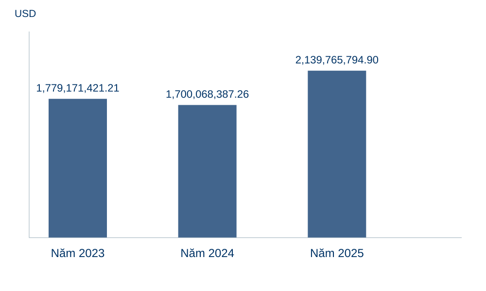
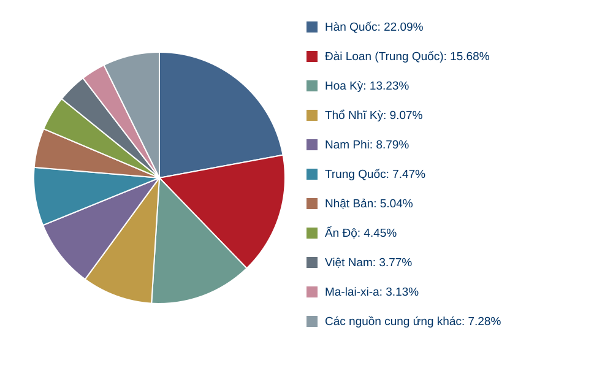
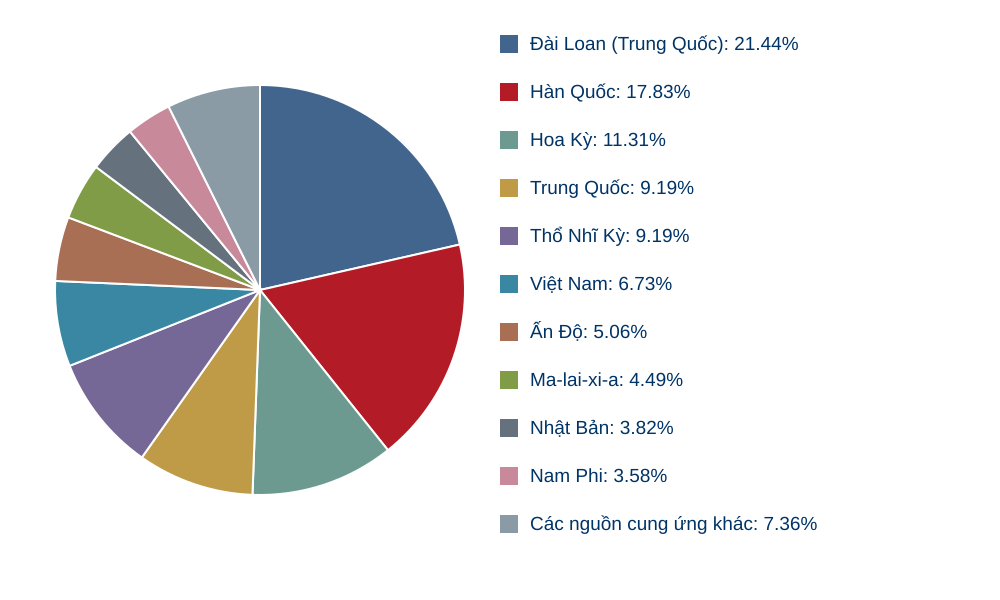
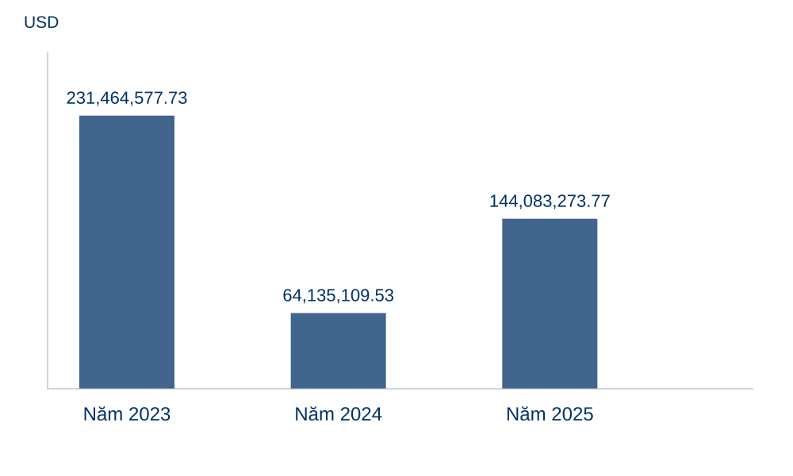
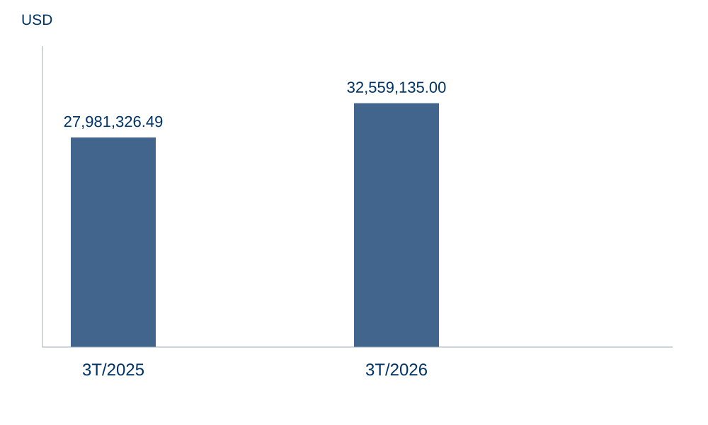

Tiếp nhận hồ sơ yêu cầu điều tra chống bán phá giá đối với thanh thép dự ứng lực nhập khẩu từ Trung Quốc
Cục Phòng vệ thương mại (Bộ Công Thương) cho biết đã tiếp nhận hồ sơ đầy đủ, hợp lệ đề nghị điều tra áp dụng biện pháp chống bán phá giá đối với sản phẩm thanh thép dự ứng lực có xuất xứ từ Cộng hòa Nhân dân Trung Hoa.
Theo thông tin từ Cơ quan điều tra, ngày 3/4/2026, hồ sơ yêu cầu điều tra đã được nộp bởi các doanh nghiệp đại diện cho ngành sản xuất trong nước. Sau quá trình xem xét, đến ngày 9/6/2026, Cục Phòng vệ thương mại xác nhận hồ sơ đáp ứng đầy đủ các yêu cầu theo quy định của pháp luật về phòng vệ thương mại và đủ điều kiện để tiến hành bước thẩm định tiếp theo.
Theo quy định tại Điều 70 Luật Quản lý ngoại thương, trong thời hạn 45 ngày kể từ ngày xác nhận hồ sơ đầy đủ và hợp lệ, Cơ quan điều tra sẽ tiến hành thẩm định hồ sơ để trình Bộ trưởng Bộ Công Thương xem xét, quyết định việc khởi xướng điều tra hoặc không khởi xướng điều tra vụ việc.
Quá trình thẩm định sẽ tập trung vào hai nội dung chính, gồm việc xác định tư cách đại diện hợp pháp của ngành sản xuất trong nước đối với các tổ chức, cá nhân nộp hồ sơ và đánh giá các chứng cứ về hành vi bán phá giá của hàng hóa nhập khẩu cũng như mức độ thiệt hại hoặc nguy cơ gây thiệt hại đáng kể đối với ngành sản xuất trong nước.
Để phục vụ công tác thẩm định và bảo đảm quyền, lợi ích hợp pháp của các bên liên quan, Cục Phòng vệ thương mại đề nghị các doanh nghiệp trong nước sản xuất hoặc kinh doanh sản phẩm thanh thép dự ứng lực cung cấp thông tin về doanh nghiệp, công suất thiết kế, sản lượng sản xuất giai đoạn 2021–2025, đồng thời nêu rõ quan điểm đối với vụ việc, bao gồm đồng ý, phản đối hoặc không có ý kiến. Các doanh nghiệp cũng được khuyến khích cung cấp thêm các tài liệu, chứng cứ liên quan nhằm hỗ trợ quá trình xem xét, đánh giá hồ sơ.
Thời hạn tiếp nhận các thông tin và ý kiến từ doanh nghiệp là đến hết ngày 30/6/2026.
Theo Cục Phòng vệ thương mại, việc thu thập thông tin từ các doanh nghiệp trong nước là cơ sở quan trọng để đánh giá toàn diện tình hình ngành sản xuất nội địa, mức độ đại diện của bên yêu cầu cũng như tác động của hàng hóa nhập khẩu bị cáo buộc bán phá giá trước khi cơ quan có thẩm quyền đưa ra quyết định về việc khởi xướng điều tra.
Các doanh nghiệp có thể gửi thông tin tới Phòng Điều tra chống bán phá giá và chống trợ cấp, Cục Phòng vệ thương mại, Bộ Công Thương để được tổng hợp và xem xét theo quy định của pháp luật.
Thông tin liên hệ:
Phòng Điều tra bán phá giá và trợ cấp
Cục Phòng vệ thương mại – Tầng 3, Tòa A, 54 Hai Bà Trưng, Cửa Nam, Hà Nội
Cán bộ phụ trách: Hoàng Ngọc Lan, Nguyễn Thanh Cương
Điện thoại: 024.7303.7898
Email: lanhtn@moit.gov.vn; cuongnth@moit.gov.vn
TIN NƯỚC NGOÀI
Hoa Kỳ đề xuất áp thuế bổ sung đối với hàng hóa nhập khẩu từ 60 đối tác thương mại do lo ngại liên quan đến lao động cưỡng bức
Ngày 03/6/2026, Văn phòng Đại diện Thương mại Hoa Kỳ (USTR) đề xuất áp dụng thuế quan bổ sung đối với hàng hóa nhập khẩu từ 60 nền kinh tế, với lập luận rằng các quốc gia và vùng lãnh thổ này chưa triển khai các biện pháp thuế quan đủ hiệu quả để ngăn chặn hàng hóa có liên quan đến lao động cưỡng bức trong chuỗi cung ứng toàn cầu.
Đề xuất được đưa ra trong khuôn khổ các cuộc điều tra theo Mục 301 của Đạo luật Thương mại Hoa Kỳ. USTR cho rằng việc không ngăn chặn hiệu quả hàng hóa có liên quan đến lao động cưỡng bức tham gia vào thương mại quốc tế có thể làm méo mó môi trường cạnh tranh, tạo lợi thế không công bằng cho các nhà sản xuất vi phạm các tiêu chuẩn lao động, đồng thời gây ra ảnh hưởng bất lợi đến lao động và doanh nghiệp Hoa Kỳ.
Theo đề xuất của USTR, các nền kinh tế sẽ được phân thành hai nhóm để áp dụng mức thuế bổ sung khác nhau. Cụ thể, hàng hóa nhập khẩu từ 15 nền kinh tế được đánh giá đã có những bước tiến nhất định trong việc xử lý vấn đề liên quan đến lao động cưỡng bức, trong đó có Liên minh châu Âu (EU), Ca-na-đa và Vương quốc Anh, có thể chịu mức thuế bổ sung 10%.
Trong khi đó, hàng hóa nhập khẩu từ 45 nền kinh tế còn lại, bao gồm Trung Quốc, Ấn Độ và Nhật Bản, có thể bị áp dụng mức thuế bổ sung cao hơn, ở mức là 12,5%.
USTR cho biết kết quả điều tra cho thấy nhiều quốc gia và vùng lãnh thổ vẫn chưa triển khai đầy đủ các biện pháp kiểm soát nhằm ngăn chặn hàng hóa có liên quan đến lao động cưỡng bức tham gia vào hoạt động thương mại quốc tế. Trên cơ sở đó USTR cho rằng việc áp dụng các biện pháp thương mại bổ sung là cần thiết để khuyến khích các đối tác thương mại nâng cao hiệu quả thực thi các tiêu chuẩn lao động và bảo đảm tính minh bạch của chuỗi cung ứng toàn cầu.
Tuy nhiên, đề xuất của Hoa Kỳ đã vấp phải phản ứng từ một số đối tác thương mại. EU cho rằng việc áp dụng thuế quan bổ sung là chưa phù hợp, đồng thời nhấn mạnh EU đã ban hành các quy định chặt chẽ nhằm ngăn chặn lao động cưỡng bức trong chuỗi cung ứng và sẽ chính thức triển khai lệnh cấm nhập khẩu hàng hóa có liên quan đến lao động cưỡng bức từ năm 2027.
Trong khi đó, Bra-xin bày tỏ quan ngại rằng đề xuất của Hoa Kỳ mang tính đơn phương và có nguy cơ trở thành một biện pháp bảo hộ thương mại dưới danh nghĩa bảo vệ quyền lao động.
Theo kế hoạch, USTR sẽ tiếp nhận ý kiến từ các bên liên quan và tổ chức các phiên điều trần công khai trong thời gian tới trước khi đưa ra quyết định cuối cùng. Hiện đề xuất vẫn đang trong giai đoạn tham vấn và chưa có hiệu lực chính thức.
Theo giới quan sát, động thái này cho thấy Hoa Kỳ đang gia tăng sử dụng các công cụ chính sách thương mại nhằm thúc đẩy các mục tiêu liên quan đến lao động và nâng cao tính bền vững của chuỗi cung ứng. Nếu được thông qua, biện pháp này có thể ảnh hưởng đáng kể đến dòng chảy thương mại toàn cầu, đồng thời làm gia tăng các tranh luận và bất đồng thương mại giữa Hoa Kỳ và một số đối tác thương mại lớn.
Tổng hợp từ reuters.com
TIN NƯỚC NGOÀI
In-đô-nê-xi-a khởi xướng rà soát giữa kỳ biện pháp chống bán phá giá đối với sản phẩm thép lá mạ thiếc nhập khẩu từ Trung Quốc
Ngày 09/6/2026, Ủy ban Chống bán phá giá In-đô-nê-xi-a (KADI) thông báo khởi xướng rà soát giữa kỳ đối với biện pháp chống bán phá giá đang áp dụng đối với sản phẩm thép lá mạ thiếc nhập khẩu từ Trung Quốc. Sản phẩm thuộc phạm vi rà soát được phân loại theo các mã HS 7210.12.10 và 7210.12.90 theo Biểu thuế Hải quan In-đô-nê-xi-a (BTKI) năm 2022.
Theo bà Frida Adiati, Chủ tịch KADI, việc khởi xướng rà soát giữa kỳ được thực hiện trên cơ sở đề nghị của Công ty PT Latinusa, nhà sản xuất thép lá mạ thiếc trong nước. KADI cho biết đã thu thập được các bằng chứng ban đầu cho thấy lượng hàng hóa nhập khẩu thép lá mạ thiếc từ Trung Quốc tiếp tục gia tăng, trong khi ngành sản xuất trong nước vẫn đang chịu thiệt hại đáng kể. Do đó, KADI đã quyết định tiến hành rà soát giữa kỳ đối với biện pháp chống bán phá giá đang được áp dụng.
Theo số liệu của KADI, trong giai đoạn từ ngày 01/01/2025 đến ngày 31/12/2025, tổng lượng thép lá mạ thiếc nhập khẩu từ Trung Quốc vào In-đô-nê-xi-a đạt khoảng 117.036 tấn, tăng 7% so với cùng kỳ năm trước. Trong đó, lượng nhập khẩu từ Trung Quốc đạt 59.378 tấn, tăng 43% so với năm trước và chiếm hơn một nửa tổng lượng nhập khẩu.
KADI cho biết đã gửi thông báo khởi xướng rà soát giữa kỳ tới các bên liên quan, bao gồm ngành sản xuất trong nước, các nhà nhập khẩu đã được xác định, cùng các nhà sản xuất và xuất khẩu của Trung Quốc thuộc phạm vi áp dụng biện pháp. Thông tin về vụ việc cũng đã được chuyển tới cơ quan đại diện của Chính phủ Trung Quốc tại In-đô-nê-xi-a và Đại sứ quán In-đô-nê-xi-a tại Trung Quốc, cuộc rà soát được tiến hành nhằm đánh giá mức độ phù hợp và hiệu quả của các biện pháp chống bán phá giá hiện hành, đồng thời xem xét liệu các điều kiện áp dụng biện pháp có cần được điều chỉnh hay không. Theo quy định, quá trình rà soát giữa kỳ dự kiến sẽ được thực hiện trong thời hạn 12 tháng kể từ ngày khởi xướng.
Trước đó, In-đô-nê-xi-a đã áp dụng thuế chống bán phá giá đối với sản phẩm thép lá mạ thiếc có xuất xứ từ Trung Quốc từ năm 2024 nhằm bảo vệ ngành sản xuất trong nước trước tác động của hàng hóa nhập khẩu bị cho là bán phá giá, việc In-đô-nê-xi-a tiến hành rà soát giữa kỳ cho thấy nước này tiếp tục theo dõi chặt chẽ hiệu quả của các biện pháp phòng vệ thương mại đang áp dụng đối với ngành thép. Động thái này cũng phản ánh xu hướng nhiều quốc gia tăng cường sử dụng các công cụ phòng vệ thương mại nhằm ứng phó với áp lực cạnh tranh từ hàng nhập khẩu trong bối cảnh tình trạng dư thừa công suất của ngành thép toàn cầu vẫn chưa được cải thiện đáng kể.
Tổng hợp từ mlex.com
TIN NƯỚC NGOÀI
EU thông qua quy định mới nhằm tăng cường bảo vệ thị trường thép
Ngày 09/6/2026, Hội đồng Liên minh châu Âu (EU) đã chính thức thông qua quy định mới nhằm bảo vệ thị trường thép của khối trước những tác động từ tình trạng dư thừa công suất thép toàn cầu.
Quy định này được xây dựng trong khuôn khổ Kế hoạch Hành động về Thép và Kim loại năm 2025, đồng thời sẽ thay thế các biện pháp tự vệ hiện hành dự kiến hết hiệu lực vào ngày 30/6/2026.
Theo EU, cơ chế mới nhằm tăng cường bảo vệ ngành thép nội khối trước các hành vi cạnh tranh không công bằng trong thương mại quốc tế, bảo đảm môi trường cạnh tranh công bằng và nâng cao tính ổn định, dự báo cho cả ngành sản xuất thép và các ngành sử dụng thép trong EU.
Một trong những nội dung đáng chú ý của quy định mới là việc điều chỉnh cơ chế hạn ngạch thuế quan (TRQ). Theo đó, EU sẽ cắt giảm hạn ngạch nhập khẩu thép được hưởng mức thuế ưu đãi, đồng thời áp dụng mức thuế cao hơn đối với lượng hàng hóa nhập khẩu vượt hạn ngạch. Để tạo thuận lợi cho hoạt động thương mại, phần hạn ngạch chưa sử dụng chỉ được phép chuyển sang quý tiếp theo trong cùng một năm dương lịch.
Bên cạnh đó, nhằm tăng cường tính minh bạch và ngăn chặn hành vi lẩn tránh biện pháp thương mại, quy định cũng bổ sung yêu cầu về tiêu chí nấu chảy và đúc. Theo tiêu chí này, cơ quan chức năng có thể xác định quốc gia nơi thép được nấu chảy và đúc lần đầu thành dạng rắn, qua đó hỗ trợ công tác xác minh xuất xứ thực tế của sản phẩm thép.
Bên cạnh đó, EU cũng thiết lập cơ chế rà soát tăng cường, cho phép Ủy ban châu Âu (EC) thường xuyên đánh giá phạm vi áp dụng và hiệu quả của các biện pháp bảo vệ thị trường thép, đồng thời điều chỉnh khi cần thiết để phù hợp với diễn biến của thị trường.
Trong tuyên bố chung, Hội đồng châu Âu, Nghị viện châu Âu và Ủy ban châu Âu tái khẳng định mục tiêu giảm sự phụ thuộc kinh tế vào Nga, đồng thời nhấn mạnh nỗ lực từng bước loại bỏ thép có xuất xứ từ Nga khỏi thị trường EU và đa dạng hóa nguồn cung nhập khẩu.
Theo kế hoạch, quy định mới sẽ chính thức có hiệu lực từ ngày 01/7/2026 sau khi được công bố trên Công báo chính thức của EU.
EU cho biết ngành thép của khối hiện đang chịu áp lực ngày càng lớn từ tình trạng dư thừa công suất toàn cầu. Theo dự báo, công suất thép dư thừa trên thế giới có thể đạt 721 triệu tấn vào năm 2027, tương đương hơn 5 lần tổng nhu cầu tiêu thụ thép hằng năm của EU. Trong bối cảnh nhiều quốc gia gia tăng các biện pháp hạn chế thương mại đối với thép nhập khẩu, thị trường EU đang trở thành điểm đến của lượng thép dư thừa trên toàn cầu.
Sự gia tăng nhập khẩu, tỷ lệ sử dụng công suất sản xuất giảm xuống còn khoảng 67% cùng với chi phí sản xuất ở mức cao đang gây áp lực đáng kể lên khả năng cạnh tranh của ngành thép EU, đồng thời ảnh hưởng đến các kế hoạch đầu tư phục vụ quá trình chuyển đổi xanh và giảm phát thải.
Theo số liệu của EU, kể từ năm 2007, ngành thép của khối đã mất khoảng 65 triệu tấn công suất sản xuất và có tới 100.000 việc làm đứng trước nguy cơ bị ảnh hưởng.
Để ứng phó với những thách thức này, tháng 3/2025, Ủy ban châu Âu đã công bố kế hoạch xây dựng một cơ chế tự vệ thép mới thay thế biện pháp hiện hành. Đề xuất chính thức được trình lên các cơ quan lập pháp của EU vào tháng 10/2025 và đã được Hội đồng EU thông qua vào tháng 6/2026.
Tổng hợp từ eurometal.net
TIN NƯỚC NGOÀI
Thổ Nhĩ Kỳ gia hạn thêm 5 năm thuế chống bán phá giá đối với lá nhôm nhập khẩu từ Trung Quốc
Thổ Nhĩ Kỳ đã chính thức gia hạn thêm 5 năm biện pháp thuế chống bán phá giá đối với sản phẩm lá nhôm nhập khẩu có xuất xứ từ Trung Quốc. Theo đó, mức thuế chống bán phá giá 22% tính trên giá CIF của hàng hóa nhập khẩu sẽ tiếp tục được duy trì, kéo dài các biện pháp bảo hộ thương mại đã được áp dụng trong hơn một thập kỷ qua.
Theo Thông báo số 2026/16 do Bộ Thương mại Thổ Nhĩ Kỳ ban hành ngày 24/5/2026, mức thuế chống bán phá giá 22% trên giá CIF (bao gồm chi phí, bảo hiểm và cước vận chuyển) sẽ tiếp tục được áp dụng ngay sau khi quyết định có hiệu lực. Quyết định này được đưa ra sau khi cơ quan chức năng kết thúc cuộc rà soát cuối kỳ lần thứ hai đối với biện pháp đang áp dụng.
Sản phẩm thuộc phạm vi áp dụng biện pháp là các loại lá và dải nhôm cán chưa có lớp đỡ, có độ dày không quá 0,2 mm và không được gia công thêm. Các sản phẩm này được phân loại theo mã HS 7607.11 và 7607.19.
Thổ Nhĩ Kỳ đã khởi xướng cuộc điều tra chống bán phá giá đầu tiên đối với lá nhôm nhập khẩu từ Trung Quốc vào tháng 12/2013 do hàng hoá bị bán phá giá vào thị trường Thổ Nhĩ Kỳ. Trên cơ sở kết quả điều tra, nước này đã áp dụng thuế chống bán phá giá từ tháng 7/2014 nhằm bảo vệ ngành sản xuất trong nước
Cuộc rà soát cuối kỳ lần thứ nhất kết thúc vào tháng 01/2020 và kết luận tiếp tục duy trì biện pháp. Đến tháng 12/2024, Thổ Nhĩ Kỳ tiếp tục cuộc rà soát cuối kỳ lần thứ hai và kết quả mới nhất đã quyết định gia hạn biện pháp đến năm 2031.
Trước đó, trong năm 2025, Thổ Nhĩ Kỳ cũng đã khởi xướng điều tra chống bán phá giá đối với một số sản phẩm nhập khẩu từ Trung Quốc như hộp nối dùng cho tấm pin mặt trời, natri gluconat và khung nhôm sử dụng cho các tấm quang điện (PV).
Tổng hợp từ alcircle.com
TIN NƯỚC NGOÀI
Tổ chức Hợp tác và Phát triển Kinh tế (OECD): Biện pháp chống bán phá giá tiếp tục là công cụ được sử dụng phổ biến trong ngành thép năm 2025
Theo báo cáo OECD Steel Outlook 2026 mới được Tổ chức Hợp tác và Phát triển Kinh tế (OECD) công bố, các biện pháp chống bán phá giá và chống trợ cấp (AD/CVD) tiếp tục được sử dụng rộng rãi trên toàn cầu trong năm 2025 nhằm ứng phó với tình trạng bán phá giá và trợ cấp trong ngành thép.
Bên cạnh đó, ngày càng nhiều quốc gia đã và đang áp dụng các biện pháp phòng vệ thương mại có phạm vi rộng hơn để bảo vệ ngành sản xuất thép trong nước.
Mặc dù số lượng các vụ điều tra chống bán phá giá và chống trợ cấp mới được khởi xướng trong năm 2025 có xu hướng giảm so với năm 2024, mức độ vẫn duy trì ở ngưỡng cao với tổng cộng 75 vụ việc, so với 90 vụ trong năm 2024. Trung Quốc tiếp tục là đối tượng bị điều tra nhiều nhất với 27 vụ việc, chiếm hơn một phần ba tổng số vụ điều tra mới. Tổng cộng có 27 quốc gia và vùng lãnh thổ là đối tượng của các vụ việc liên quan đến hành vi thương mại không công bằng trong giai đoạn này.
Hầu hết các cuộc điều tra được khởi xướng trong năm 2025 đều đưa ra kết luận sơ bộ có tồn tại hành vi bán phá giá/trợ cấp. OECD cho biết các cơ quan điều tra ngày càng nâng cao hiệu quả xử lý vụ việc khi thời gian ban hành kết luận sơ bộ đã giảm từ khoảng 200 ngày trong các năm gần đây xuống còn 144 ngày trong năm 2025. Đáng chú ý, các cuộc điều tra chống trợ cấp thường được điều tra đồng thời với các cuộc điều tra chống bán phá giá.
Tuy nhiên, OECD lưu ý rằng tác động đầy đủ của các vụ việc phòng vệ thương mại cần được đánh giá trong dài hạn do các biện pháp đã áp dụng từ những năm trước vẫn tiếp tục ảnh hưởng đến dòng chảy thương mại toàn cầu.
Xu hướng trong những năm gần đây, ngày càng có nhiều quốc gia khởi xướng các vụ việc mới, đồng thời phạm vi sản phẩm và số lượng quốc gia bị điều tra cũng ngày càng mở rộng.
Tổng số biện pháp chống bán phá giá và chống trợ cấp đang có hiệu lực, bao gồm cả các vụ việc được khởi xướng từ năm 2016 đến nay, đã đạt mức cao kỷ lục với 395 biện pháp trong năm 2025, tăng đáng kể so với 321 biện pháp trong năm 2024. Hiện có 113 biện pháp đang được áp dụng đối với Trung Quốc, 41 biện pháp đối với Hàn Quốc và 33 biện pháp đối với Việt Nam.
Xét theo quốc gia áp dụng biện pháp, Hoa Kỳ đứng đầu với 77 biện pháp đang có hiệu lực, tiếp theo là Ca-na-đa với 64 biện pháp, Ô-xtrây-li-a với 46 biện pháp và Liên minh châu Âu (EU) với 32 biện pháp. Bốn nền kinh tế này hiện chiếm khoảng một nửa tổng số biện pháp chống bán phá giá và chống trợ cấp đang được áp dụng trên toàn cầu.
OECD cũng nhận định rằng các biện pháp chống bán phá giá và chống trợ cấp là công cụ phù hợp để xử lý các vấn đề liên quan đến những sản phẩm cụ thể từ những quốc gia cụ thể, nhưng chưa đủ để giải quyết tình trạng dư thừa công suất thép mang tính toàn cầu. Vì vậy, ngày càng nhiều nền kinh tế chuyển sang áp dụng các biện pháp thương mại có phạm vi rộng hơn. Tuy nhiên, trong nhiều trường hợp, các biện pháp này cũng tác động đến hàng nhập khẩu từ những quốc gia không phải là nguồn gốc của tình trạng dư thừa công suất, qua đó ảnh hưởng đến các chuỗi giá trị khu vực.
Theo dữ liệu của OECD, công suất sản xuất thép dư thừa trên toàn cầu được dự báo sẽ đạt 745 triệu tấn vào năm 2028, tiếp tục tạo áp lực lớn đối với thị trường thép thế giới.
Tổng hợp từ gmk.center
TIN NƯỚC NGOÀI
Phi-líp-pin áp dụng biện pháp tự vệ đối với xi măng nhập khẩu từ Trung Quốc và In-đô-nê-xi-a
Phi-líp-pin sẽ áp dụng biện pháp tự vệ đối với xi măng nhập khẩu từ Trung Quốc và In-đô-nê-xi-a sau khi ghi nhận sự gia tăng đáng kể lượng nhập khẩu từ hai quốc gia này.
Quyết định được công bố tại Lệnh số 26-03 của Bộ Thương mại và Công nghiệp Phi-líp-pin (DTI) ban hành ngày 20/5/2026 và sẽ có hiệu lực sau khi Cục Hải quan Phi-líp-pin (BOC) ban hành văn bản hướng dẫn thực hiện.
Trong tổng số 6,02 triệu tấn xi măng nhập khẩu của Phi-líp-pin trong năm 2025 và 1,29 triệu tấn trong giai đoạn từ tháng 1 đến tháng 3/2026, tỷ trọng xi măng nhập khẩu từ Trung Quốc đã tăng lên 11% trong năm 2025 và 23% trong quý I/2026. Trong khi đó, tỷ trọng nhập khẩu từ In-đô-nê-xi-a đạt lần lượt 6% và 8% trong các giai đoạn tương ứng.
Điều này đồng nghĩa với việc lượng nhập khẩu từ hai quốc gia đã vượt ngưỡng tối thiểu (de minimis) dưới 3%, dẫn đến việc Trung Quốc và In-đô-nê-xi-a bị loại khỏi danh sách các nước đang phát triển được miễn áp dụng biện pháp tự vệ đối với xi măng nhập khẩu theo Lệnh số 25-15 của DTI.
Theo Lệnh số 25-15, Phi-líp-pin áp dụng biện pháp tự vệ chính thức trong thời hạn 3 năm đối với xi măng Poóc-lăng thông thường loại I (mã AHTN 2022 số 2523.29.90) và xi măng hỗn hợp (mã AHTN 2022 số 2523.90.00). Chính sách này miễn áp dụng biện pháp đối với các sản phẩm có xuất xứ từ các nước đang phát triển có thị phần nhập khẩu dưới 3% tổng lượng nhập khẩu.
Sau khi Trung Quốc và In-đô-nê-xi-a không còn thuộc diện miễn trừ, Lệnh số 26-03 quy định xi măng nhập khẩu từ hai quốc gia này sẽ phải chịu biện pháp tự vệ trong năm đầu tiên với mức 14 peso/bao 40 kg hoặc 349 peso/tấn.
Theo quy định hiện hành, hàng nhập khẩu có xuất xứ từ các nước đang phát triển được liệt kê tại Phụ lục A của Lệnh số 25-15 và có lượng nhập khẩu ở mức tối thiểu sẽ không phải chịu biện pháp tự vệ chính thức. Ngược lại, hàng hóa từ các nước xuất khẩu mới, ngoại trừ các nước được hưởng quy chế ngưỡng tối thiểu, sẽ tự động bị áp dụng biện pháp tự vệ.
Ngoài ra, các nhà nhập khẩu xi măng Poóc-lăng thông thường loại I và xi măng hỗn hợp có xuất xứ từ các quốc gia được miễn áp dụng biện pháp tự vệ phải nộp Giấy chứng nhận xuất xứ (C/O) do cơ quan có thẩm quyền của nước xuất khẩu cấp. Tài liệu này phải được chứng nhận hợp pháp hóa lãnh sự theo quy định hoặc được Đại sứ quán/Tổng Lãnh sự quán Phi-líp-pin xác nhận.
DTI cho biết mức biện pháp tự vệ do Ủy ban Thuế quan (TC) kiến nghị chỉ tương đương khoảng 3-4% giá bán lẻ hiện hành của xi măng trên thị trường.
Trước khi có kiến nghị của Ủy ban Thuế quan, DTI đã áp dụng biện pháp tự vệ tạm thời đối với xi măng nhập khẩu từ nhiều quốc gia sau khi kết quả điều tra sơ bộ cho thấy lượng nhập khẩu gia tăng đã gây thiệt hại đáng kể cho ngành sản xuất xi măng trong nước.
Năm ngoái, Cục Hải quan Phi-líp-pin cũng đã triển khai biện pháp tự vệ tạm thời dưới hình thức tiền ký quỹ với mức 400 peso/tấn hoặc 16 peso/bao 40 kg đối với xi măng Poóc-lăng thông thường và xi măng hỗn hợp theo Lệnh số 25-01 của DTI.
Biện pháp này được áp dụng căn cứ theo Đạo luật số 8800 của Phi-líp-pin (Luật Biện pháp tự vệ), cho phép áp dụng biện pháp tự vệ trong những trường hợp khẩn cấp khi sự chậm trễ có thể gây ra thiệt hại khó khắc phục, đồng thời có kết luận sơ bộ cho thấy lượng hàng nhập khẩu gia tăng là nguyên nhân đáng kể gây thiệt hại cho ngành sản xuất trong nước.
Tổng hợp từ portcalls.com
BÀI VIẾT
Tình hình xuất khẩu mặt hàng thép không gỉ cán nguội vào thị trường EU
Mô tả mặt hàng thép không gỉ cán nguội
Thép không gỉ cán nguội (Stainless steel cold-rolled flat products) là sản phẩm thép không gỉ được sản xuất từ thép cán nóng thông qua quá trình cán nguội ở nhiệt độ thường nhằm giảm độ dày, nâng cao độ chính xác kích thước và cải thiện chất lượng bề mặt sản phẩm. Thành phần chủ yếu của thép không gỉ cán nguội bao gồm sắt (Fe), crôm (Cr) với hàm lượng tối thiểu khoảng 10,5%, cùng một số nguyên tố hợp kim khác như niken (Ni), molypden (Mo), mangan (Mn) hoặc titan (Ti) tùy theo từng mác thép. Nhờ hàm lượng crôm cao, sản phẩm có khả năng chống ăn mòn, chống oxy hóa và chịu tác động của môi trường khắc nghiệt tốt hơn so với thép carbon thông thường.
Thép không gỉ cán nguội thường được cung cấp dưới dạng cuộn, tấm hoặc lá với độ dày phổ biến từ 0,2 mm đến dưới 6 mm, bề mặt sáng bóng, nhẵn mịn và có độ phẳng cao. Sản phẩm có các cấp hoàn thiện bề mặt khác nhau như 2B, BA, No.1, No.4, HL (Hairline) hoặc Mirror tùy theo mục đích sử dụng. Nhờ quy trình cán nguội, thép đạt được độ bền cơ học cao, độ cứng tốt, khả năng gia công chính xác và tính thẩm mỹ vượt trội.
Các mác thép không gỉ cán nguội được sử dụng phổ biến trên thị trường bao gồm SUS 201, SUS 304, SUS 316, SUS 430 và các loại tương đương theo tiêu chuẩn ASTM, JIS hoặc EN. Trong đó, thép không gỉ 304 là loại được sử dụng rộng rãi nhất nhờ khả năng chống ăn mòn tốt, dễ gia công và phù hợp với nhiều lĩnh vực khác nhau. Sản phẩm được ứng dụng rộng rãi trong ngành chế tạo thiết bị gia dụng, đồ dùng nhà bếp, thiết bị y tế, công nghiệp thực phẩm, hóa chất, ô tô, xây dựng, trang trí nội thất, sản xuất bồn chứa, ống dẫn và nhiều lĩnh vực công nghiệp khác.
Với các đặc tính nổi bật như độ bền cao, tuổi thọ dài, khả năng chống gỉ sét, dễ vệ sinh, thân thiện với môi trường và có thể tái chế hoàn toàn, thép không gỉ cán nguội ngày càng trở thành vật liệu quan trọng trong sản xuất công nghiệp và xây dựng hiện đại. Đây là mặt hàng có giá trị thương mại lớn trên thị trường quốc tế, được giao dịch rộng rãi giữa các quốc gia và thường là đối tượng của các cuộc điều tra phòng vệ thương mại do mức độ cạnh tranh cao giữa các nhà sản xuất và xuất khẩu trên toàn cầu.
Quy trình sản xuất thép không gỉ cán nguội
Quy trình sản xuất thép không gỉ cán nguội là một quá trình công nghệ phức tạp nhằm tạo ra sản phẩm thép có độ chính xác cao về kích thước, chất lượng bề mặt tốt và tính chất cơ học vượt trội. Nguyên liệu đầu vào chủ yếu là thép không gỉ cán nóng dưới dạng cuộn (hot-rolled stainless steel coils), được sản xuất từ quá trình luyện kim và đúc liên tục. Sau khi được cán nóng, thép sẽ trải qua công đoạn tẩy gỉ bằng dung dịch axit để loại bỏ lớp oxit hình thành trên bề mặt trong quá trình gia nhiệt. Công đoạn này giúp làm sạch bề mặt thép, tạo điều kiện thuận lợi cho các bước gia công tiếp theo.
Sau khi tẩy gỉ, thép được đưa vào dây chuyền cán nguội, nơi vật liệu được ép qua nhiều cặp trục cán ở nhiệt độ thường nhằm giảm độ dày theo yêu cầu kỹ thuật. Quá trình cán nguội không chỉ giúp tạo ra sản phẩm có độ dày chính xác hơn mà còn cải thiện độ cứng, độ bền kéo và độ phẳng của thép. Do sự biến cứng của vật liệu trong quá trình cán, thép thường phải trải qua công đoạn ủ nhiệt (annealing) để khôi phục độ dẻo và giảm ứng suất nội tại. Quá trình ủ được thực hiện trong các lò nhiệt chuyên dụng với môi trường được kiểm soát chặt chẽ nhằm đảm bảo chất lượng sản phẩm và duy trì khả năng chống ăn mòn của thép không gỉ.
Sau khi ủ nhiệt, thép tiếp tục được tẩy sạch bề mặt để loại bỏ các lớp oxit phát sinh trong quá trình gia nhiệt. Tiếp theo là công đoạn cán tinh hoặc cán da (skin-pass rolling), giúp cải thiện độ phẳng, tăng chất lượng bề mặt, nâng cao độ bóng và đảm bảo dung sai kích thước theo yêu cầu của khách hàng. Tùy thuộc vào mục đích sử dụng, sản phẩm có thể được xử lý bề mặt bằng các phương pháp đánh bóng, chải xước, tạo vân hoặc phủ lớp bảo vệ để đạt các tiêu chuẩn hoàn thiện khác nhau như 2B, BA, No.4, Hairline hoặc Mirror.
Công đoạn cuối cùng bao gồm kiểm tra chất lượng, cắt theo kích thước yêu cầu và đóng gói. Các chỉ tiêu được kiểm tra thường bao gồm độ dày, chiều rộng, độ phẳng, thành phần hóa học, tính chất cơ học, độ nhám bề mặt và khả năng chống ăn mòn. Sau khi đáp ứng đầy đủ các tiêu chuẩn kỹ thuật và yêu cầu của khách hàng, thép không gỉ cán nguội được đóng gói dưới dạng cuộn hoặc tấm và phân phối đến các ngành công nghiệp như sản xuất thiết bị gia dụng, chế biến thực phẩm, y tế, xây dựng, ô tô, cơ khí chế tạo và các lĩnh vực công nghiệp khác. Nhờ quy trình sản xuất hiện đại và được kiểm soát nghiêm ngặt, thép không gỉ cán nguội có chất lượng cao, độ bền vượt trội, tính thẩm mỹ tốt và khả năng đáp ứng các yêu cầu kỹ thuật khắt khe của thị trường trong nước và quốc tế.
Thị trường thép không gỉ cán nguội của EU và xu hướng
Liên minh châu Âu (EU) là một trong những thị trường tiêu thụ thép không gỉ cán nguội lớn nhất thế giới, với nhu cầu ổn định đến từ các ngành công nghiệp chế tạo, xây dựng, ô tô, thiết bị gia dụng, năng lượng tái tạo, y tế và chế biến thực phẩm. Thép không gỉ cán nguội được đánh giá cao tại thị trường EU nhờ các đặc tính vượt trội như khả năng chống ăn mòn, độ bền cơ học cao, tuổi thọ dài, tính thẩm mỹ tốt và khả năng tái chế hoàn toàn. Các quốc gia như Đức, Ý, Pháp, Tây Ban Nha, Hà Lan và Ba Lan là những trung tâm sản xuất và tiêu thụ thép không gỉ lớn của khu vực. Bên cạnh nguồn cung nội khối từ các nhà sản xuất lớn của châu Âu, EU cũng nhập khẩu một lượng đáng kể thép không gỉ cán nguội từ các quốc gia ngoài khối nhằm đáp ứng nhu cầu đa dạng của thị trường.
Trong những năm gần đây, thị trường thép không gỉ cán nguội của EU chịu tác động từ nhiều yếu tố như biến động giá nguyên liệu đầu vào, chi phí năng lượng gia tăng, quá trình chuyển đổi xanh và sự thay đổi trong chuỗi cung ứng toàn cầu. Cuộc khủng hoảng năng lượng tại châu Âu cùng với các yêu cầu ngày càng khắt khe về môi trường đã làm gia tăng chi phí sản xuất của các doanh nghiệp trong khu vực, từ đó tạo cơ hội cho các nhà cung cấp ngoài EU có năng lực cạnh tranh về giá. Tuy nhiên, để bảo vệ ngành sản xuất nội địa, EU đã áp dụng nhiều biện pháp phòng vệ thương mại đối với các sản phẩm thép nhập khẩu, bao gồm chống bán phá giá, chống trợ cấp và cơ chế tự vệ đối với một số chủng loại thép không gỉ.
Xu hướng phát triển của thị trường thép không gỉ cán nguội EU trong thời gian tới gắn liền với chiến lược phát triển bền vững và mục tiêu trung hòa carbon của khối. Nhu cầu đối với các sản phẩm thép có hàm lượng phát thải carbon thấp, sử dụng nguyên liệu tái chế và đáp ứng các tiêu chuẩn môi trường ngày càng gia tăng. Đồng thời, sự phát triển của các ngành năng lượng tái tạo, xe điện, cơ sở hạ tầng xanh và công nghệ cao được dự báo sẽ tiếp tục thúc đẩy nhu cầu tiêu thụ thép không gỉ cán nguội chất lượng cao. Bên cạnh đó, việc triển khai Cơ chế điều chỉnh biên giới carbon (CBAM) của EU sẽ tạo ra những yêu cầu mới về minh bạch dữ liệu phát thải và truy xuất nguồn gốc sản phẩm đối với các nhà xuất khẩu nước ngoài.
Đối với các doanh nghiệp xuất khẩu thép không gỉ cán nguội, thị trường EU vẫn là thị trường tiềm năng với quy mô lớn và nhu cầu ổn định. Tuy nhiên, để duy trì và mở rộng thị phần, các doanh nghiệp cần chú trọng nâng cao chất lượng sản phẩm, đáp ứng các tiêu chuẩn kỹ thuật và môi trường của EU, đầu tư vào công nghệ sản xuất xanh, xây dựng hệ thống quản lý phát thải carbon và chủ động theo dõi các biện pháp phòng vệ thương mại đang được áp dụng. Trong bối cảnh xu hướng phát triển bền vững ngày càng trở thành yêu cầu bắt buộc, năng lực đáp ứng các tiêu chuẩn về môi trường, xã hội và quản trị doanh nghiệp (ESG) sẽ là yếu tố quan trọng quyết định khả năng cạnh tranh của các nhà xuất khẩu thép không gỉ cán nguội trên thị trường EU trong những năm tới.
Tình hình xuất khẩu thép không gỉ cán nguội từ các nguồn trên thế giới sang thị trường EU
Năm 2023, tổng kim ngạch xuất khẩu thép không gỉ cán nguội từ tất cả các nguồn trên thế giới sang EU đạt 1,8 tỷ USD, trong đó Đài Loan (Trung Quốc) là nhà cung cấp lớn nhất, tiếp theo là các thị trường như Hàn Quốc, Hoa Kỳ, Việt Nam và Thổ Nhĩ Kỳ. Trong năm 2024, kim ngạch xuất khẩu mặt hàng này sang EU có sự sụt giảm nhẹ 4,4% so với năm 2023 đạt 1,7 tỷ USD. Tuy nhiên, năm 2025, kim ngạch xuất khẩu sang EU có sự gia tăng trở lại đạt 25,9%, đạt 2,1 tỷ USD.
Nhìn chung, trong giai đoạn 2023-2025, xuất khẩu thép không gỉ cán nguội từ các nguồn trên thế giới sang EU có xu hướng phục hồi và tăng trưởng sau giai đoạn suy giảm trước đó. Khu vực châu Á tiếp tục giữ vai trò là nguồn cung chủ đạo, trong khi nhu cầu nhập khẩu của EU được hỗ trợ bởi quá trình phục hồi sản xuất công nghiệp và nhu cầu thay thế nguồn cung nội khối. Tuy nhiên, xu hướng gia tăng các biện pháp phòng vệ thương mại, yêu cầu về phát triển bền vững và các quy định liên quan đến chuyển đổi xanh sẽ tiếp tục là những yếu tố tác động mạnh đến hoạt động xuất khẩu thép không gỉ cán nguội vào thị trường EU trong những năm tới.
Tổng giá trị nhập khẩu thép không gỉ cán nguội của EU từ 2023 đến 2025
Đơn vị: USD

Nguồn: S&P Global
Năm 2024, Hàn Quốc là nguồn cung cấp có trị giá xuất khẩu thép không gỉ cán nguội lớn nhất sang thị trường EU, đạt 375,5 triệu USD, chiếm 22,1% tổng kim ngạch nhập khẩu sản phẩm cùng loại của EU. Đài Loan (Trung Quốc) xếp thứ hai với trị giá xuất khẩu đạt 266,5 triệu USD, chiếm 15,7% tổng kim ngạch nhập khẩu sản phẩm cùng loại của EU. Hoa Kỳ xếp thứ ba với trị giá xuất khẩu đạt 225 triệu USD, chiếm 13,2% tổng kim ngạch nhập khẩu sản phẩm cùng loại của EU. Thổ Nhĩ Kỳ xếp thứ tư với trị giá xuất khẩu đạt 154,2 triệu USD, chiếm 9,1% tổng kim ngạch nhập khẩu sản phẩm cùng loại của EU. Nam Phi, Trung Quốc, Nhật Bản và Ấn Độ lần lượt xếp thứ năm, thứ sáu, thứ bảy và thứ tám với trị giá xuất khẩu đạt 149,4 triệu, 127,1 triệu USD, 85,6 triệu USD và 75,6 triệu USD. Việt Nam xếp thứ tám với trị giá xuất khẩu đạt 64,1 triệu USD, chiếm 3,8% tổng kim ngạch nhập khẩu sản phẩm cùng loại của EU. Tổng trị giá xuất khẩu thép không gỉ cán nguội của mười nguồn cung ứng chính sang thị trường EU đạt 1,6 tỷ USD, chiếm 92,7% tổng kim ngạch nhập khẩu sản phẩm cùng loại của EU. Tổng trị giá xuất khẩu thép không gỉ cán nguội của các nguồn cung ứng khác đạt 123,7 triệu USD, chiếm 7,3% tổng kim ngạch nhập khẩu sản phẩm cùng loại của EU.
Năm 2025, Đài Loan (Trung Quốc) là nguồn cung cấp có trị giá xuất khẩu thép không gỉ cán nguội lớn nhất sang thị trường EU, đạt 458,7 triệu USD, chiếm 21,4% tổng kim ngạch nhập khẩu sản phẩm cùng loại của EU. Hàn Quốc xếp thứ hai với trị giá xuất khẩu đạt 381,6 triệu USD, chiếm 17,8% tổng kim ngạch nhập khẩu sản phẩm cùng loại của EU. Hoa Kỳ xếp thứ ba với trị giá xuất khẩu đạt 242,1 triệu USD, chiếm 11,3% tổng kim ngạch nhập khẩu sản phẩm cùng loại của EU. Trung Quốc và Thổ Nhĩ Kỳ lần lượt xếp thứ tư và thứ năm với trị giá xuất khẩu đạt 196,7 triệu USD và 196,6 triệu USD. Với trị giá xuất khẩu tăng 124,7%, Việt Nam xếp thứ sáu với trị giá xuất khẩu đạt 144,1 triệu USD, chiếm 6,7% tổng kim ngạch nhập khẩu sản phẩm cùng loại của EU. Tổng trị giá xuất khẩu thép không gỉ cán nguội của mười nguồn cung ứng sang thị trường EU đạt gần 2 tỷ USD, chiếm 92,6% tổng kim ngạch nhập khẩu sản phầm cùng loại của EU. Tổng trị giá xuất khẩu thép không gỉ cán nguội của các nguồn cung ứng khác đạt 157,4 triệu USD, chiếm 7,4% tổng kim ngạch nhập khẩu sản phẩm cùng loại của EU.
Các nguồn cung ứng chính sang thị trường EU năm 2024 và 2025
Đơn vị: USD
Nguồn cung ứng vào EU
Trị giá NK năm 2024
Trị giá NK năm 2025
2025 so với 2024
Tỷ trọng năm 2024
Tỷ trọng năm 2025
Đài Loan (Trung Quốc)
266.518.780
458.714.762
72,1%
15,7%
21,4%
Hàn Quốc
375.514.092
381.617.795
1,6%
22,1%
17,8%
Hoa Kỳ
224.983.606
242.062.365
7,6%
13,2%
11,3%
Trung Quốc
127.076.068
196.747.875
54,8%
7,5%
9,2%
Thổ Nhĩ Kỳ
154.216.228
196.637.308
27,5%
9,1%
9,2%
Việt Nam
64.135.110
144.083.274
124,7%
3,8%
6,7%
Ấn Độ
75.633.058
108.187.894
43,0%
4,4%
5,1%
Ma-lai-xi-a
53.280.655
95.994.362
80,2%
3,1%
4,5%
Nhật Bản
85.611.664
81.672.013
-4,6%
5,0%
3,8%
Nam Phi
149.397.791
76.649.731
-48,7%
8,8%
3,6%
Nguồn: S&P Global
Trong 3 tháng đầu năm 2026, tổng kim ngạch nhập khẩu thép không gỉ cán nguội của EU giảm 39,2% so với cùng kỳ năm trước đó, đạt 323,8 triệu USD. Hàn Quốc là nguồn cung cấp thép không gỉ cán nguội lớn nhất sang thị trường EU, đạt 55,1 triệu USD, chiếm 17% tổng kim ngạch nhập khẩu sản phẩm cùng loại của EU. Đài Loan (Trung Quốc) xếp thứ hai trong số các nguồn cung ứng lớn thép không gỉ cán nguội sang thị trường EU với kim ngạch xuất khẩu đạt 50 triệu USD, chiếm 15,4% tổng kim ngạch nhập khẩu sản phẩm cùng loại của EU. Nhật Bản xếp thứ ba trong số các nguồn cung ứng lớn thép không gỉ cán nguội sang thị trường EU với kim ngạch xuất khẩu đạt 39,6 triệu USD, chiếm 12,2% tổng kim ngạch nhập khẩu sản phẩm cùng loại của EU. Hoa Kỳ xếp thứ tư trong số các nguồn cung ứng lớn thép không gỉ cán nguội sang thị trường EU với kim ngạch xuất khẩu đạt 33 triệu USD, chiếm 10,2% tổng kim ngạch nhập khẩu sản phẩm cùng loại của EU. Việt Nam xếp thứ năm trong số các nguồn cung ứng lớn thép không gỉ cán nguội sang thị trường EU với kim ngạch xuất khẩu đạt 32,6 triệu USD, chiếm 10,1% tổng kim ngạch nhập khẩu sản phẩm cùng loại của EU. Thổ Nhĩ Kỳ, Trung Quốc và Nam Phi lượt xếp thứ sáu, thứ bảy và thứ tám với trị giá xuất khẩu đạt 30,9 triệu USD, 16,5 triệu USD và 11,8 triệu USD.
Các nguồn cung ứng chính sang thị trường EU trong 3 tháng đầu năm 2025 và 2026
Đơn vị: USD
Nguồn cung ứng vào EU
Trị giá NK 3 tháng/2025
Trị giá NK 3 tháng/2026
3T/2026 so với 3T/2025
Tỷ trọng 2026
Hàn Quốc
108.004.205
55.102.536
-49,0%
17,0%
Đài Loan
115.124.133
49.928.048
-56,6%
15,4%
Nhật Bản
21.027.175
39.641.195
88,5%
12,2%
Hoa Kỳ
69.708.024
32.993.750
-52,7%
10,2%
Việt Nam
27.981.326
32.559.135
16,4%
10,1%
Thổ Nhĩ Kỳ
50.921.250
30.856.557
-39,4%
9,5%
Trung Quốc
59.040.779
16.483.124
-72,1%
5,1%
Nam Phi
17.283.328
11.783.144
-31,8%
3,6%
Ấn Độ
19.777.973
11.102.420
-43,9%
3,4%
Vương quốc Anh
8.671.214
10.630.403
22,6%
3,3%
Nguồn: S&P Global
Tỷ trọng các nguồn cung ứng chính xuất khẩu sang EU năm 2024

Nguồn: S&P Global
Tỷ trọng các nguồn cung ứng chính xuất khẩu sang EU năm 2025

Nguồn: S&P Global
3. Tình hình xuất khẩu thép không gỉ cán nguội của Việt Nam sang thị trường EU
Năm 2023, trị giá xuất khẩu mặt hàng thép không gỉ cán nguội của Việt Nam đạt 231,5 triệu USD, chiếm 13% tổng kim ngạch nhập khẩu mặt hàng thép không gỉ cán nguội của EU, Việt Nam xếp thứ tư trong số các nguồn cung cấp thép không gỉ cán nguội sang thị trường EU. Năm 2024, trị giá xuất khẩu mặt hàng này của Việt Nam có sự sụt giảm 72,3%, đạt 64,1 triệu USD, chiếm 3,8% tổng kim ngạch nhập khẩu mặt hàng cùng loại của EU, Việt Nam xếp thứ tám trong số các nguồn cung cấp thép không gỉ cán nguội sang thị trường EU. Năm 2025, tổng kim ngạch xuất khẩu mặt hàng thép không gỉ cán nguội của Việt Nam có sự gia tăng trở lại 124,7% so với năm trước đó, đạt 144,1 triệu USD, chiếm 6,7% tổng kim ngạch nhập khẩu mặt hàng này của EU, Việt Nam xếp thứ sáu trong số các nguồn cung cấp thép không gỉ cán nguội sang thị trường EU.
Tổng trị giá xuất khẩu thép không gỉ cán nguội của Việt Nam sang EU từ năm 2023 đến 2025
Đơn vị: USD

Nguồn: S&P Global
Trong 3 tháng đầu năm 2025, trị giá xuất khẩu thép không gỉ cán nguội của Việt Nam sang thị trường EU đạt 28 triệu USD, chiếm 5,3% tổng kim ngạch nhập khẩu sản phẩm cùng loại của EU, Việt Nam xếp thứ sáu trong số các nguồn cung cấp thép không gỉ cán nguội sang thị trường EU. Trong 3 tháng đầu năm 2026, trị giá xuất khẩu thép không gỉ cán nguội của Việt Nam tăng 16,4% so với cùng kỳ năm trước, đạt 32,6 triệu USD, chiếm 10,1% tổng kim ngạch nhập khẩu sản phẩm cùng loại của EU, Việt Nam xếp thứ năm trong số các nguồn cung cấp thép không gỉ cán nguội sang thị trường EU.
Trị giá xuất khẩu thép không gỉ cán nguội của Việt Nam sang EU trong 3 tháng đầu năm 2025 và 2026
Đơn vị: USD

Nguồn: S&P Global
Cảnh báo và khuyến nghị
EU đã áp dụng thuế chống bán phá giá đối với thép không gỉ cán nguội nhập khẩu từ Trung Quốc, Đài Loan (Trung Quốc), Ấn Độ và In-đô-nê-xi-a
Với tỷ trọng kim ngạch ở mức đáng kể và đang có xu hướng tăng lên, các doanh nghiệp xuất khẩu cần theo dõi khả năng EU khởi xướng điều tra phòng vệ thương mại đối với sản phẩm này của Việt Nam trong thời gian tới.
Do vậy, các doanh nghiệp sản xuất và xuất khẩu thép không gỉ cán nguội của Việt Nam cần chủ động xây dựng chiến lược phòng ngừa và ứng phó với các vụ việc phòng vệ thương mại ngay từ giai đoạn đầu. Doanh nghiệp cần thường xuyên theo dõi tình hình nhập khẩu thép của EU, các động thái điều tra thương mại đối với sản phẩm cùng loại từ các quốc gia khác, cũng như các cảnh báo sớm từ Cục Phòng vệ thương mại.
Bên cạnh đó, việc xây dựng hệ thống lưu trữ dữ liệu kế toán, chi phí sản xuất, hồ sơ xuất khẩu và chứng từ xuất xứ đầy đủ, minh bạch là yếu tố quan trọng để sẵn sàng hợp tác với cơ quan điều tra khi có yêu cầu. Các doanh nghiệp cũng cần đa dạng hóa nguồn cung nguyên liệu, bảo đảm tính hợp pháp và khả năng truy xuất nguồn gốc của nguyên liệu đầu vào nhằm tránh nguy cơ bị cáo buộc lẩn tránh biện pháp phòng vệ thương mại hoặc gian lận xuất xứ. Đồng thời, cần đầu tư đổi mới công nghệ, nâng cao hiệu quả sử dụng năng lượng, giảm phát thải carbon và đáp ứng các tiêu chuẩn môi trường ngày càng khắt khe của EU để duy trì năng lực cạnh tranh lâu dài.
Việc tăng cường phối hợp với hiệp hội ngành thép, cơ quan quản lý nhà nước và các đối tác nhập khẩu tại EU cũng sẽ giúp doanh nghiệp cập nhật kịp thời các thay đổi chính sách, nâng cao khả năng ứng phó với các vụ việc phòng vệ thương mại và tận dụng hiệu quả các cơ hội từ Hiệp định Thương mại tự do Việt Nam – EU (EVFTA). Trong dài hạn, chiến lược phát triển theo hướng sản xuất xanh, minh bạch và tuân thủ các tiêu chuẩn quốc tế sẽ là yếu tố then chốt giúp ngành thép không gỉ cán nguội của Việt Nam duy trì và mở rộng thị phần tại thị trường EU.
 BỘ CÔNG THƯƠNG
BỘ CÔNG THƯƠNG